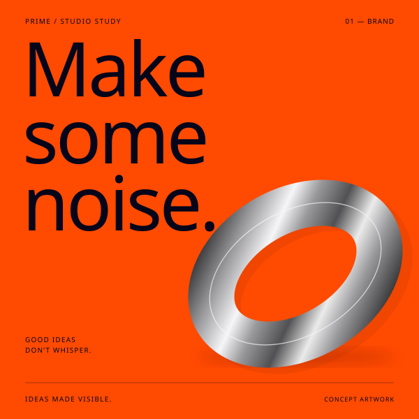
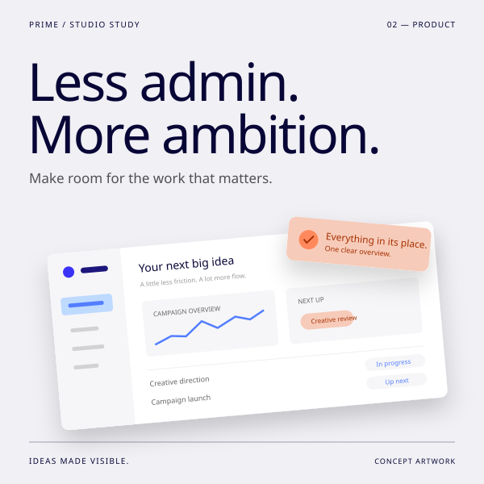
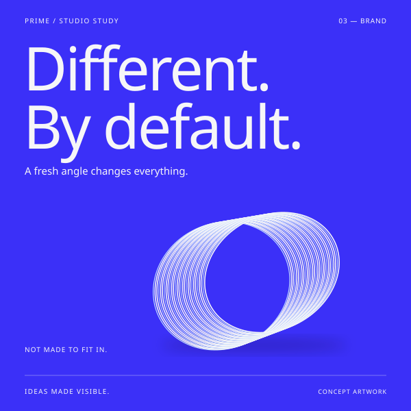
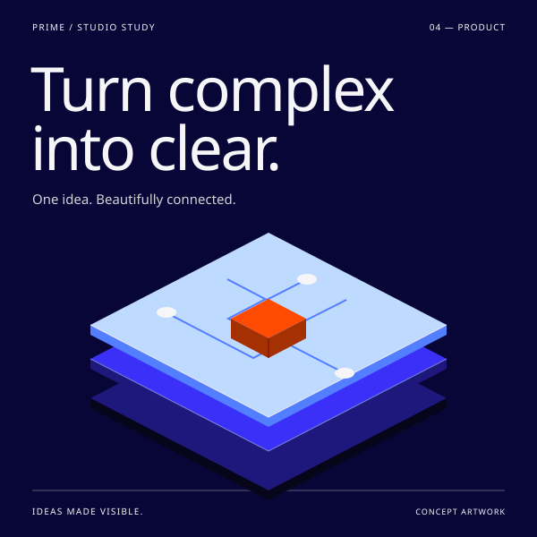
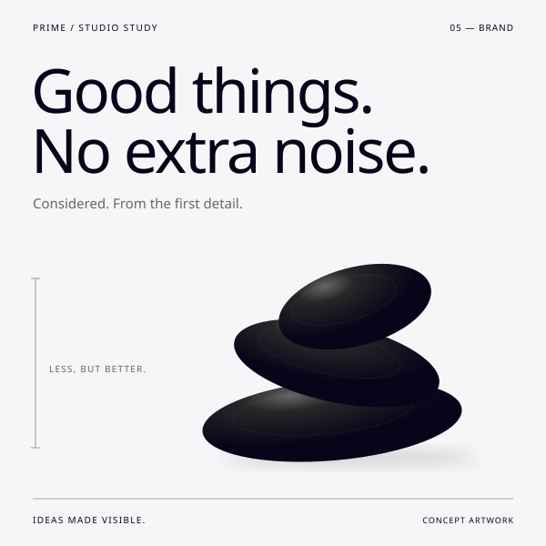
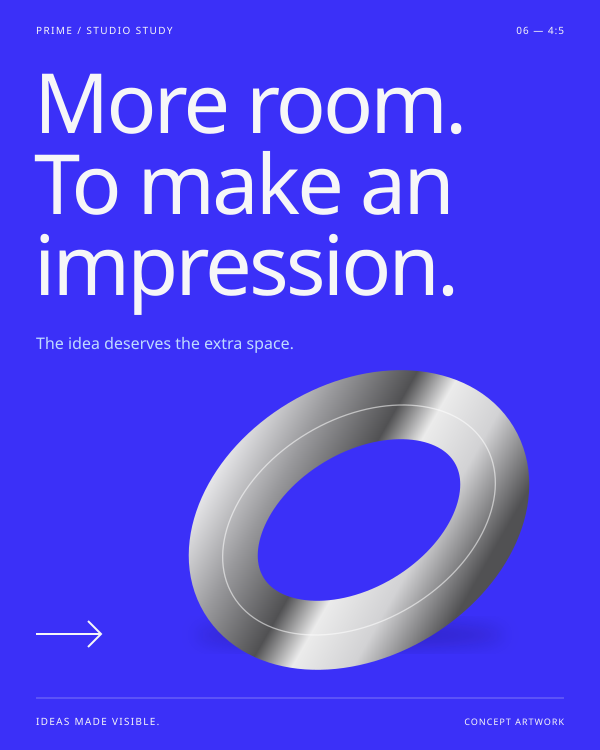
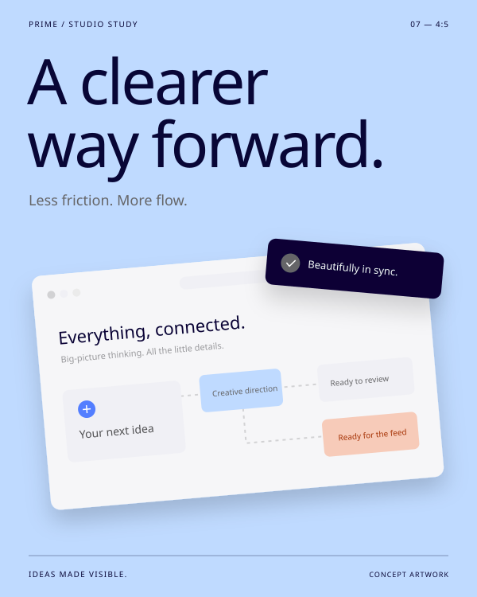
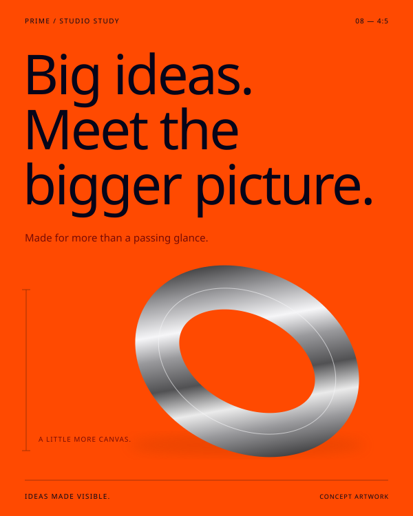

The bold approach.
Brand-led creative
Prime Marketing / Ad creative
Design previewGood ideas deserve to be seen.
Ad creative with a clear idea.
A distinctive look. A reason to pause.

01 / Sample creative

Ideas, in full colour. Click to take a closer look.
Strategy Creative Paid media
A closer look, below01 Selected work
Creative studies / 05 square
From a bold brand statement to a product’s smallest detail. A few ways to make an impression.
Brand-led creative
Product-led creative
Brand-led creative

Sample studyView creativeProduct-led creative

Sample studyView creativeBrand-led creative
A strong idea can take more than one shape.
Let’s give it more room02 A different perspective
1:1 4:5The idea stays. The canvas grows.
More space for the product,
the message, and the idea.
+25%more canvas
at the same width.

Square format, 1:1.
A taller canvas. The same care.
03 portrait studies.
Room for the whole idea.
Brand-led creative

Sample studyView creativeProduct-led creative

Sample studyView creativeBrand-led creative
25% more canvas compares area at equal width.
Your next creative